Formação, prática, pesquisa e comunidade.
A LANAP é a liga acadêmica de neurociência do curso de Medicina da UniBH Vespasiano.
Neurociência que se aprende, se pratica, se pesquisa e se compartilha.
O Núcleo Científico aprofunda o estudo das neurociências e aproxima os estudantes da realidade clínica e cirúrgica, em um percurso contínuo.
Programa Formativo
Aulas e discussões consolidam as bases em neuroanatomia, semiologia neurológica e neurociência aplicada.
- 1.1
Bases da neurociência
Os temas partem dos fundamentos: neuroanatomia, semiologia neurológica e neurociência aplicada.
- 1.2
Aula planejada pela liga
A liga define a estrutura e o plano de conteúdo de cada aula antes do encontro.
- 1.3
Docentes da instituição
As aulas são ministradas por professores convidados da UniBH Vespasiano.
- 1.4
Discussão e material de apoio
Cada encontro combina exposição e discussão, com material como slides e apostila para revisar depois.
Programa Imersivo
Vivências em serviços aproximam os ligantes da prática, sempre com orientação e supervisão.
- 2.1
Aula prática de neuroanatomia
A imersão em neuro começa pela anatomia, em aula prática preparatória com docente da instituição.
- 2.2
Paramentação cirúrgica
Antes de entrar em campo, os ligantes treinam paramentação e conduta no ambiente cirúrgico de neurocirurgia.
- 2.3
Protocolo de campo
Cada vivência respeita a capacidade real do serviço, com protocolo de campo e regras de registro definidos antes.
- 2.4
Vivência supervisionada
A prática acontece nos serviços, sempre com orientação e supervisão.
Produção Científica
Grupos de estudo formulam perguntas de pesquisa, analisam criticamente as evidências e desenvolvem trabalhos sob orientação docente.
- 3.1
Pergunta de pesquisa
Os grupos de estudo começam por uma pergunta, não por um tema genérico.
- 3.2
Leitura crítica das evidências
A literatura é analisada criticamente antes de qualquer conclusão.
- 3.3
Orientação docente
Os trabalhos são desenvolvidos sob orientação de professores.
- 3.4
Ciência comunicada
Temas aprovados pela diretoria científica viram dossiês e conteúdo científico publicado nos canais da liga.
Núcleo Cultural
O Núcleo Cultural leva à comunidade o conhecimento construído pela Liga e traz de volta as demandas que ela apresenta, em diálogo permanente com o Núcleo Científico.
- 4.1
Compartilhar conhecimento
Transformar temas científicos em conversas e atividades úteis, construídas com os parceiros e ajustadas a quem participa.
- 4.2
Escutar o território
Acolher experiências e necessidades locais para que orientem os temas, os formatos e as prioridades das próximas ações da Liga.
Ciência e comunidade orientam uma à outra.
Formar estudantes com rigor científico e sensibilidade para o cuidado.
A LANAP está aberta a parcerias com profissionais e serviços que compartilhem esse compromisso.